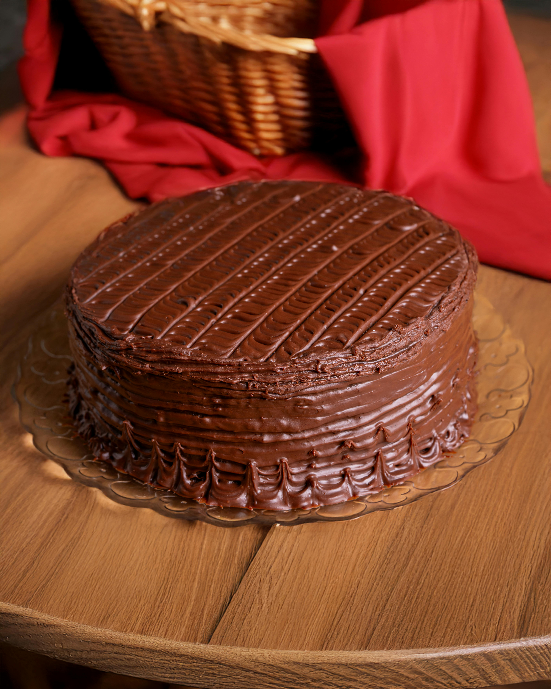

Chocolate Cake

Ingredients
- 2 cups All-purpose flour
- 2 cups Sugar
- 3/4 cup Unsweetened cocoa powder
- 2 tsp Baking powder
- 1.5 tsp Baking soda
- 1 tsp Salt
- 1 cup Milk
- 1/2 cup Vegetable oil
- 2 large Eggs
- 2 tsp Vanilla extract
- 1 cup Hot water (this is the secret to a super soft, moist cake!)
Instructions
- Preheat your oven to 350°F (175°C). Grease two 9-inch round baking pans with a little butter or oil.
- In a large bowl, whisk together the flour, sugar, cocoa powder, baking powder, baking soda, and salt.
- Add the milk, vegetable oil, eggs, and vanilla extract to the dry ingredients. Mix everything together on medium speed until well combined.
- Carefully pour in the hot water and stir gently. Don't worry if the batter looks very thin and watery—this is exactly how it should look!
- Pour the batter evenly into your two prepared baking pans.
- Bake for 30-35 minutes. To check if it's done, poke the center with a toothpick; if it comes out clean, the cake is ready.
- Let the cakes cool completely before taking them out of the pans and adding your favorite frosting.